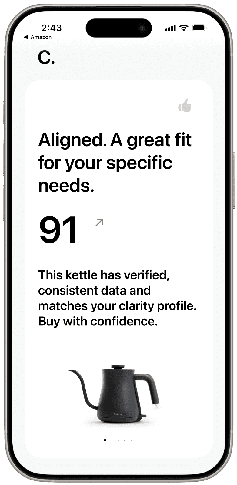
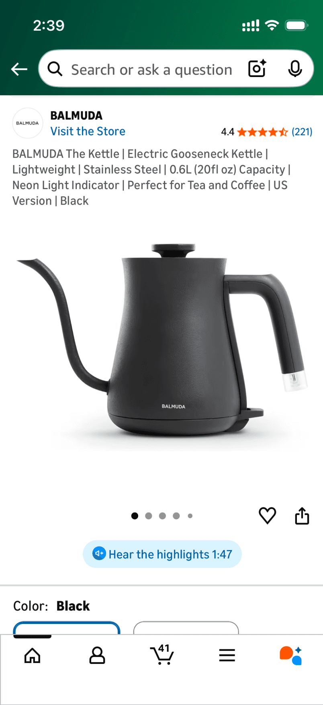
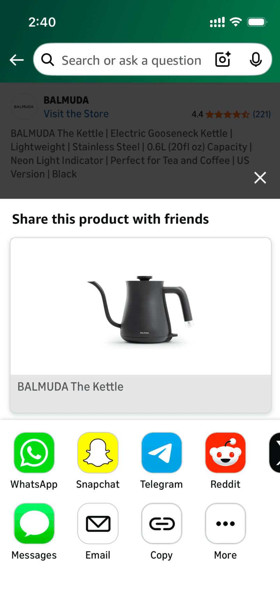
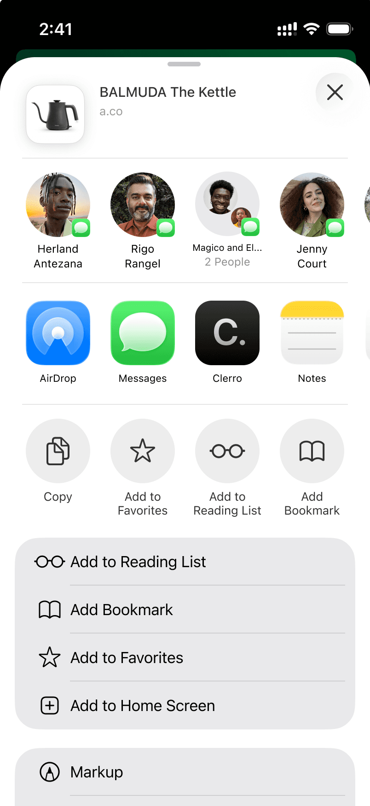
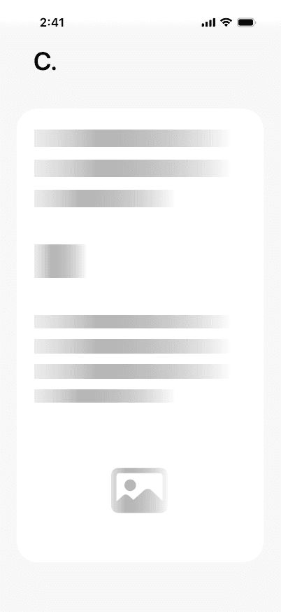
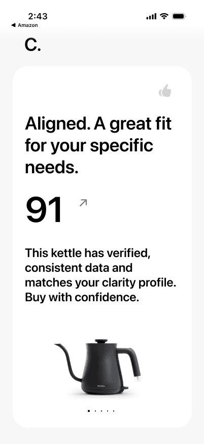
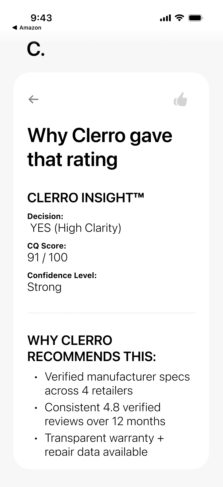
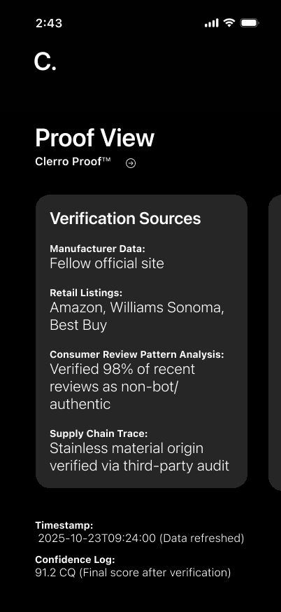
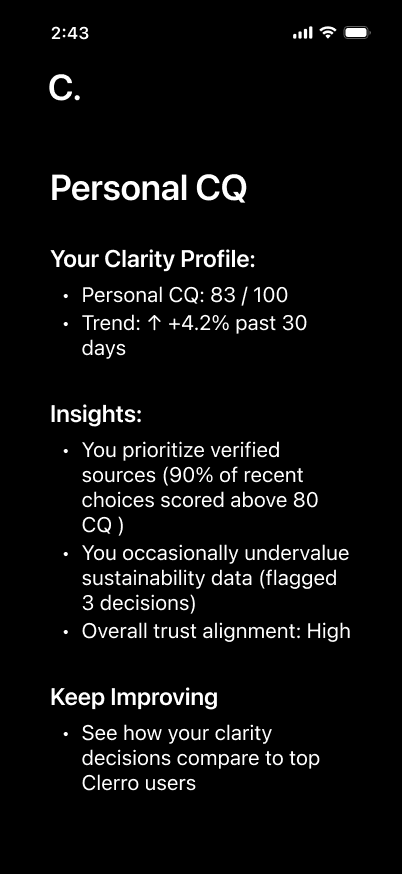
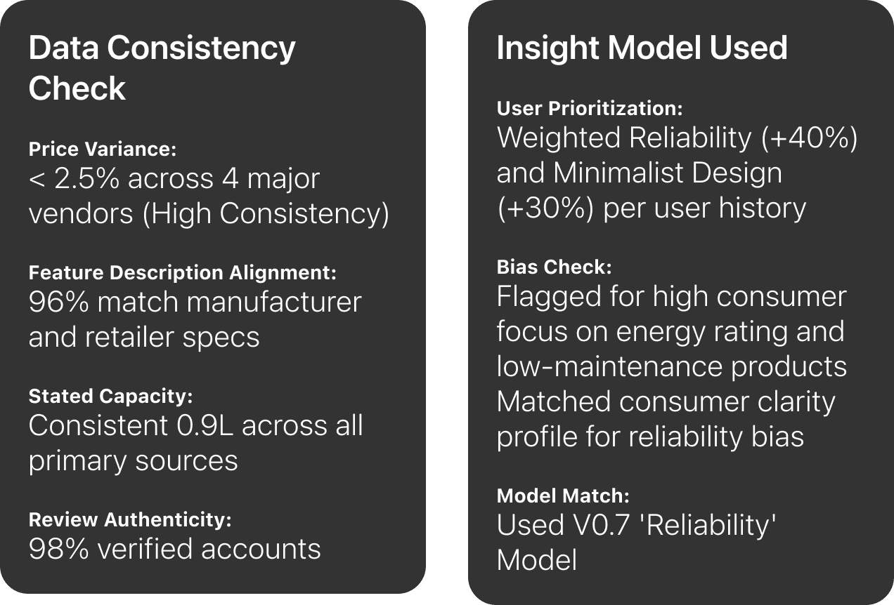

People don't need more AI tools — they need systems that know who they are and how they think. As the sole designer on a 0-to-1 AI decision-intelligence product, I turned an abstract idea into an investor-ready prototype: screenshot a product, get a clear, personal verdict you can trust.

On Amazon, TikTok or any store, the user takes a screenshot or shares a link to Clerro. Analysis starts immediately — no login, no onboarding.



A moment of friction becomes a moment of confidence: the verdict and CQ score appear at once, with the reasons one tap away.



Users can see exactly how a verdict was verified, then explore how their own clarity profile is evolving.



Proof details: data-consistency check and the insight model used.
The same behavioral learning engine can power a different application layer: a ClerroLayer API offering decision logic as a service, and Team CQ for organizational decision patterns — for procurement, vendor selection and compliance decisions.